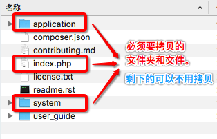
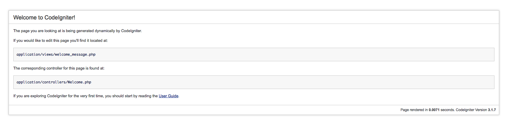
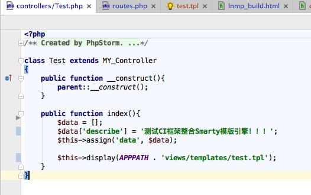
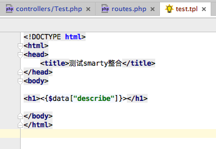
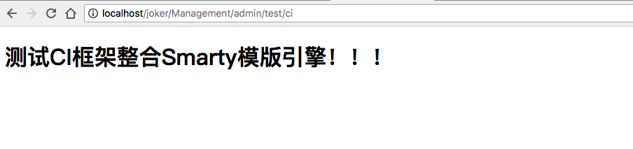

CI 框架整合 Smarty 模版引擎
(本地开发环境下进行： CI 3.x + Smarty 3.x)
本地开发环境准备说明
此处不做过多的说明，你可以下载一个本地集成开发环境（如：XAMPP 或者 wampserver）安装使用；本文档是基于 MAC、 XAMPP 环境进行介绍。
一、搭建CI框架环境
1、下载 CI 3.x 版本
下载地址： https://codeigniter.org.cn/download
2、解压、拷贝、初始访问
解压文件，并将其中的文件夹 application、 system、 和文件 index.php 拷贝到你的web根目录下，然后就可以使用CI框架了。至于其他的文件夹和文件，根据你的心情选择是否要一起拷贝。

然后访问你的web进行测试：http://localhost/xxx/ ，如果得到如下画面，表示CI框架环境搭建成功。

二、整合 Smarty 模版引擎
1、下载 Smarty 3.x 版本
下载地址： https://github.com/smarty-php/smarty/releases/tag/v3.1.30
2、解压
3、在 application/third_party/ 文件夹下创建文件夹 smarty-3.1.30 ，并将解压好的Smarty库中的libs文件夹复制到 smarty-3.1.30 文件夹中
4、在application/config下创建smarty.php(其中的路径和定界符均可以自由定义使用)，代码如下:
< ?php
if (!defined('BASEPATH')) exit('No direct script access allowed');
$config['cache_lifetime'] = 60;
$config['caching'] = false;
$config['template_dir'] = APPPATH . 'views';
$config['compile_dir'] = APPPATH . 'views/template_c';
$config['cache_dir'] = APPPATH . 'views/cache';
$config['config_dir'] = APPPATH . 'views/config';
$config['use_sub_dirs'] = false; //子目录变量(是否在缓存文件夹中生成子目录)
$config['left_delimiter'] = '<{';
$config['right_delimiter'] = '}>';
5、在application/libraries下创建一个Ci_smarty.php(注意：文件名可以随意保存，但接下来的步骤会用到此文件，所以请区分大小写)，代码如下：
< ?php
if ( ! defined('BASEPATH')) exit('No direct script access allowed');
require_once(APPPATH .'third_party/smarty-3.1.30/libs/SmartyBC.class.php');
class Ci_smarty extends SmartyBC {
protected $ci;
public function __construct(){
parent::__construct();
$this->ci = & get_instance();
$this->ci->load->config('smarty');//加载smarty的配置文件
$this->cache_lifetime = $this->ci->config->item('cache_lifetime');
$this->caching = $this->ci->config->item('caching');
$this->config_dir = $this->ci->config->item('config_dir');
$this->template_dir = $this->ci->config->item('template_dir');
$this->compile_dir = $this->ci->config->item('compile_dir');
$this->cache_dir = $this->ci->config->item('cache_dir');
$this->use_sub_dirs = $this->ci->config->item('use_sub_dirs');
$this->left_delimiter = $this->ci->config->item('left_delimiter');
$this->right_delimiter = $this->ci->config->item('right_delimiter');
}
}
6、在application/core下新建一个MY_Controller.php ，代码如下：
< ?php
class MY_Controller extends CI_Controller {
public function __construct() {
parent::__construct();
$this->load->library("Ci_smarty");
}
public function assign($key, $val) {
$this->ci_smarty->assign($key, $val);
}
public function display($html) {
$this->ci_smarty->display($html);
}
}
7、测试 Smarty 的整合
在 application/controller/ 目录下创建一个控制器文件 Test.php， 代码如下：

在 application/views/templates/ 目录下创建一个控制器文件 test.tpl， 代码如下：

在 application/config/routes.php 文件中添加控制器的访问路由，则可以进行访问测试；如果得到如下的界面，则整合成功：

至此，CI框架整合Smarty模版引擎完毕。